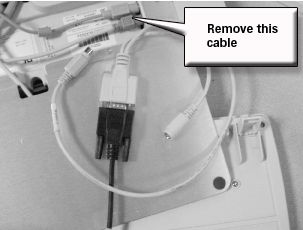
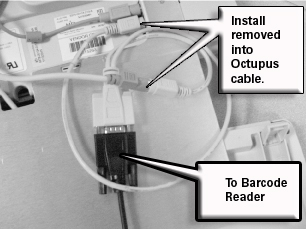

Operating Documentation
Direction 5133330-3, Rev# 14
Signa EXCITE HD 3.0T Service Methods
Module Version 1.0, Version Date 5/3/07
Operating Documentation |
| Required Persons | Preliminary Reqs | Procedure | Finalization |
|---|---|---|---|
| 1 | Not Applicable | 30 mins | Not Applicable |
Shut down Signa and turn power off the system computer.
The barcode reader installs in series with the system keyboard. Flip upside down the keyboard and the SCIM module.
Remove the cable that connects to the keyboard. (see Illustration 1).
Illustration 1: Remove The Cable Connecting The Keyboard

Install the removed cable into the “Octupus cable. (see Illustration 2).
Illustration 2: Barcode Reader Cables Installed

Install the barcode reader cable into the keyboard. (see Illustration 2).
Reboot Signa to the scanning level.
Do a quick phantom scan to ensure the scanner is still working properly.